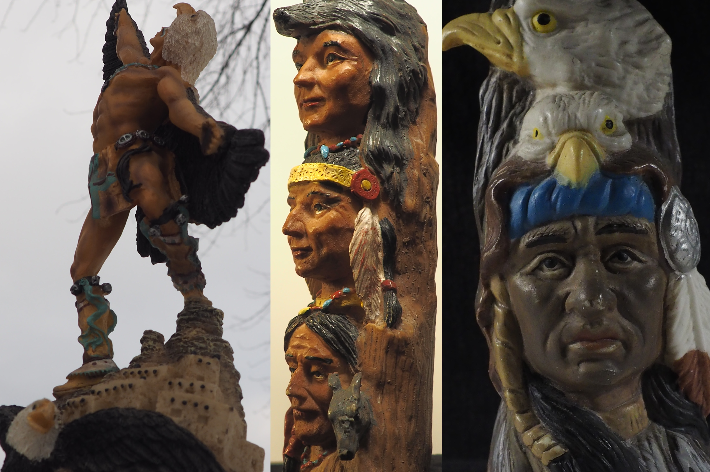

Click to view full screen
×

I was set out to take photographs of native sculptures in a portrait set up.The idea behind these photographs was to present the realistic feel of these pieces, showing that sculptures can have realism.
Olympus E-10Mark2 digital camera was used for this project The camera was set at i auto mode with a shutter speed of 1/250 sec. 2 LAD lights were used. Each portrait was different on which the two lights were angled. The majority of my portraits had one light up top of the object while the other was on the far left at a half foot away. A black blanket was used for the background.
The biggest struggle that I overcame was the perfect lighting. Some areas would be darker then others, so it took some time making light and dark where they needed to be.

Me and an old highschool friend of mine went on an nature walk to take some photography! Olympus E-10Mark2 digital camera was used for this project. Do we impact the world? Or does the world impact us? The idea was to capture the reflection of my friend through mirror and perspective back and white photography.